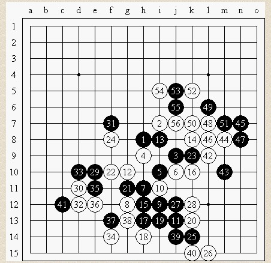
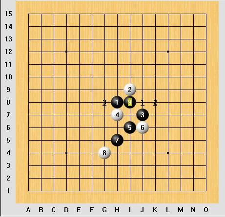
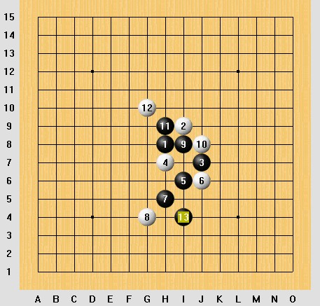
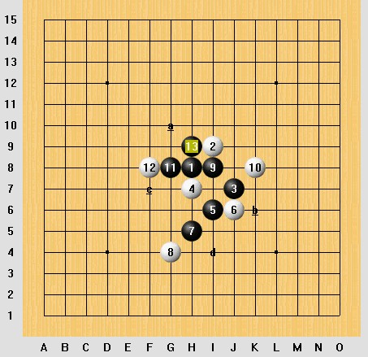
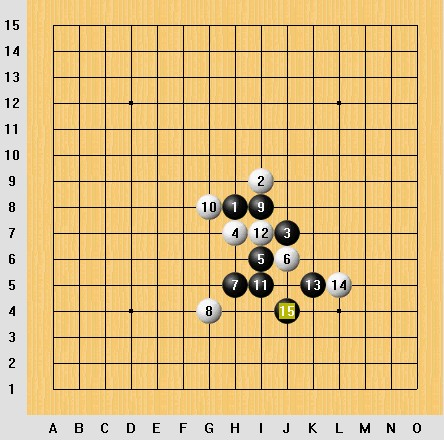

本文链接：http://user.qzone.qq.com/51313059/blog/1215070237
最近发现五子棋比赛的开局变化越来越多,看完团体赛的比赛棋谱,发现了很多好招,
也发现很多骗招,对别人开的骗招,我不禁会想,我自己会同样中招吗?
我们看比赛的这盘棋
黑方;殷立成 白方:段然
前7手是大家熟悉的形状,这个基本上没有什么考虑 对9手,如果是我,我估计也会下这么点,10应该是唯一
11手 也不错,发展需要,可以把局面向右边发展,但这棋有点意味,就是如果黑胜不了,那左边黑麻烦.
同样12 有点赌运气. 13手做杀,14手正常防,这个14可能有其他点,如右边跳反3等! 15手疑问,如果右边跳3将有胜!

那么这盘棋算白棋成功的一盘,12 14有点赌的味道
从这盘棋看到,一般骗招的想法,是感觉最好的点,和正确简单的点不是同一个点,那么这个棋就有可能被骗到
这盘棋 主要骗的是9手,我们看下图

从这图看到 9手后,白主要有3个选择 对于这3个选择,我们分别看.假如10手落在1位,那么黑可以H9 ,那么白最好只能挡上,然后黑再I4做杀 如下图

那有人会想,假如10手直接挡43点会怎么样呢,其实这个黑有连续胜,我们可以看到
前13手唯一变化,那么14当在a时,黑可以先活3 再d就胜了.假如挡b.那么黑下c点,在左上黑同样可以胜

这里,假如10手挡 G8位置这个棋也是很复杂的，黑没有连续攻击胜,我们看下,到15手都是唯一发展的思路,现在,白挡任何地方手输

从这里我们看到,黑9正确,胜的思路就比较简单了,希望大家在学棋的时候 一定要扎实,并不是说黑很优势就不用去学!
原来这个黑9可以取胜哦？……
第一幅图，老定式9-10的取胜变化似乎更有意思~

因为这个残通水